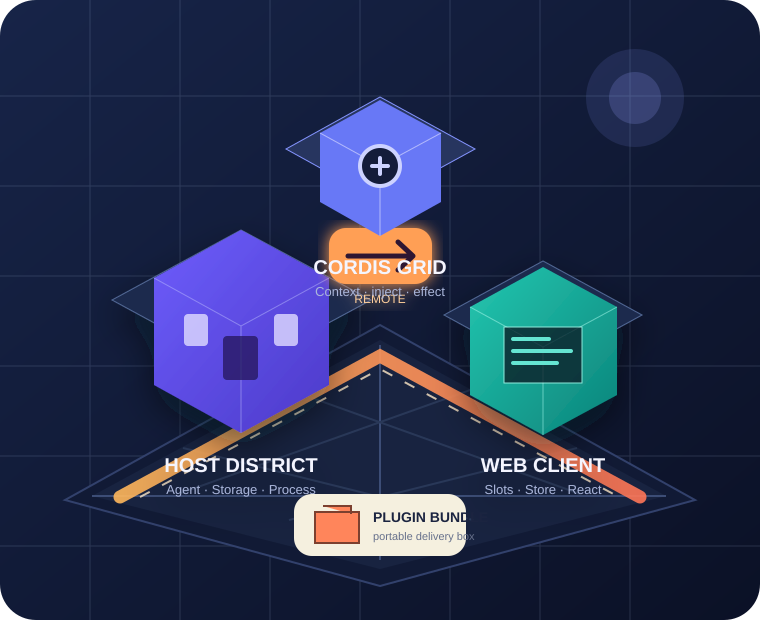
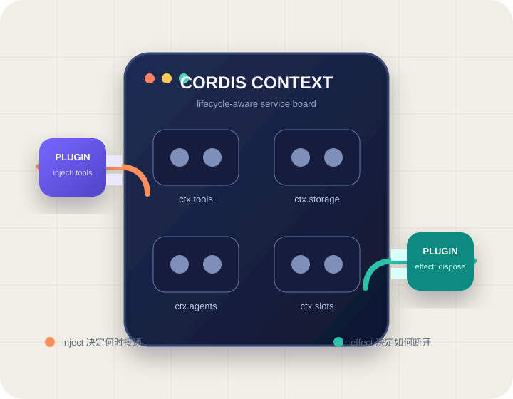

HOSTNode.js · trusted process
做真正的工作
- 存储、文件与子进程
- Agent / Tool / Workflow
- 凭据、权限与状态权威
ServiceStorageAgent
CORDIS × DSH PLUGIN · LEARNING PATH
先认识 Cordis 如何组织能力，再理解 DSH Plugin 如何连接模型、后台与 Web 页面；最后按工具、服务、工作流、UI 和 Bundle 等场景完成开发与排错。

CHOOSE YOUR ROUTE
概念学习、插件开发和问题排查对应不同的阅读重点。
02CORDIS FOUNDATIONS
Cordis 不是神秘内核，它更像一块带生命周期管理的智能配电板。

Profile 与 Bundle patch 组合出 Loader 行；这一步先确认 id、name 与 config 是否进入最终树。
03WHAT IS A DSH PLUGIN
它是挂载到 Cordis 上的一组能力贡献。分清 Host、Client 和 Composition，就能看懂插件从代码到产品的完整路径。
安全边界：普通 DSH 插件是宿主进程内可信代码。工具沙箱不等于插件沙箱；不可信第三方逻辑应放进独立进程/容器，再走窄 RPC。
04SCENARIO GUIDE
不要从包结构出发；先回答“谁触发、谁持有状态、是否需要界面”。
输入一次、执行一次、返回结构化结果。
Tool Plugin例如：查询数据、转换文件、受控命令在执行前后加入审批、超时或审计。
Hook / Policy例如：权限门禁、重试、指标采集能力有状态、可复用，或需要替换实现。
Service / Provider例如：存储、执行器、业务目录任务有节点、状态机、取消或人工评审。
Workflow Plugin例如：代码审查、报告生成、发布流程用户需要查看状态、填写输入或操作任务。
Client Plugin例如：侧栏、工作台、运行详情把多个插件和配置组合为一键安装包。
Plugin Bundle例如：安装、升级、卸载与 profile 装配05WEB CLIENT
它是独立的 Browser runtime，有自己的模块图、Cordis Context 和构建产物。
{
"exports": {
"./client": {
"default": "./lib/client.js"
}
},
"dsh": {
"client": {
"platform": "web",
"inject": ["…ui-slots"]
}
}
}FRONTEND RULES
页面不出现时按顺序查：manifest → ./client export → tarball files → /plugins 请求 → external → Client inject → slot。不要一开始就改 React 组件。
06BACKEND SERVICE
持久化、调度、取消、权限与凭据只在 Host 端收口。
metadata + 完整 execute，返回 disposer；拒绝重复 id。
先 durable write，再进入队列；插件卸载竞态也有定义。
逐节点 await，传递 AbortSignal，输出必须为有界 JSON。
先写终态，再发信号；晚到返回不能复活任务。
停止 admission → abort → await → flush → close。
没有 checkpoint 就明确失败，不能伪装成续跑。
07PACKAGING & DEPENDENCIES
把依赖关系分清，才能做出离开源码目录仍然可安装的 `.tgz`。
安装后的 Node 入口真实 import，由包管理器提供。
规则：运行时缺少它，Host 会直接加载失败。
ONE INSTALLABLE TARBALL
npm ci→npm run build→npm test→npm run pack→dsh plugin add …tgz08TROUBLESHOOTING PATH
从契约到真实安装，一层只证明一件事。
检查 Cordis service key 与运行端面；不要通过调整文件顺序掩盖错误依赖。
沿 manifest → client.js → external → inject → slot 的加载链逐项确认。
先提交 durable terminal；节点返回时再次检查，拒绝晚到结果。
检查真正 tarball 的发布视图，尤其 workspace 链接与 Client 产物。
09COMMON QUESTIONS
从症状开始，依次查看“可能原因 → 推荐处理”。
根因 npm workspace 使用本地链接，外层 pack 并未自动携带真实成员文件。
修复 先 pack 每个成员，在 staging 目录用 file: tarball 离线安装，再 pack 外层 bundle。
根因 浏览器 bundle 内嵌了第二份 React 或 Cordis，破坏运行时身份。
修复 宿主基座设为 external；npm 用 peer dependency 表达宿主身份。
根因 把 AbortSignal 当作“取消已完成”，且节点提交前没有检查 durable 终态。
修复 先持久化取消，再广播信号；所有提交点拒绝覆盖 terminal。
根因 注册不属于插件 effect，旧 fiber 卸载时没有 disposer。
修复 所有副作用进入 ctx.effect()，并让异步 disposer 完整 drain。
根因 developer preview 的插件、Remote、Client module 接口被当作稳定 ABI。
修复 固定精确版本/commit，记录验证矩阵；升级时重跑安装、启动、重启和卸载闭环。
10REQUIREMENT TRANSLATOR
选择能力特征，得到建议包拓扑、关键契约与验收路径。结果是起点，不替代对目标 DSH 版本的核对。
DEEP DIVE
网页负责建立地图，Markdown 负责带你走完全程。